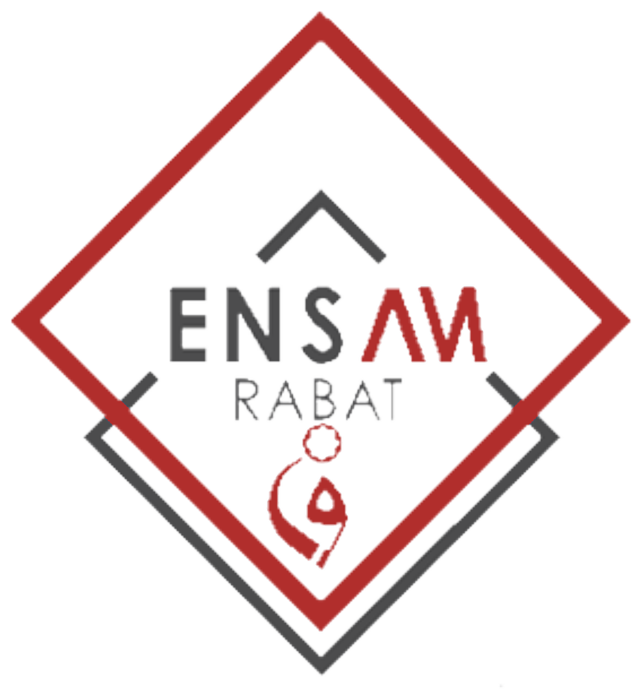

Université Mohammed V de Rabat
École Nationale Supérieure d'Arts et Métiers
MINI-PROJET · INDUSTRIE 4.0 · FILIÈRE INDIA&SD
Jumeau numérique
d'une ligne de production
Simuler la ligne, la superviser en temps réel et tester virtuellement des scénarios d'optimisation
Aymane Issami · Marouan Ezbakhe · Hiba Benzahra · Zaid Hsain · Houssam Kichchou · Mohamed Hamdouch
Encadré par Prof. Maria Zemzami · 3e année, S5 · 2026/2027
Accroche : « Peut-on savoir, avant de toucher à une machine, combien de produits on gagnera en accélérant le contrôle qualité ? » C'est exactement la question à laquelle un jumeau numérique répond. Présenter l'équipe en une phrase.
Jumeau numérique · Industrie 4.0ENSAM Rabat
Contexte
Pourquoi un jumeau numérique ?
Le problème
- Tester une amélioration sur une ligne réelle coûte cher : arrêt, matière, risque sur la production
- Les effets d'un changement (goulot, files, blocages) sont difficiles à prévoir à la main
La réponse Industrie 4.0
- Un double virtuel de la ligne, synchronisé sur ses données
- On observe, on analyse, on teste « et si… ? » sans risque
Les 3 livrables du cahier des charges
- Modèle de simulation du système physique
- Interface synchronisée avec des données simulées
- Scénario d'optimisation testé et documenté
Ce que nous avons ajouté
- Historique de production (SQLite) et export CSV
- 23 tests automatisés qui valident le modèle
- Manuel utilisateur, rapport, dépôt Git
Rappeler les 3 niveaux (modèle, ombre, jumeau) de Kritzinger : ici le « physique » est lui-même simulé, mais la synchronisation et le retour des commandes sont automatiques.
Jumeau numérique · Industrie 4.0ENSAM Rabat
Le système étudié
Une ligne de 4 postes en série
Alimentation5 s
→file ≤ 8→
Traitement8 s
→file ≤ 8→
Contrôle qualité15 s · 5 % rejets
→file ≤ 8→
Emballage7 s
15 sposte le plus lent : contrôle qualité
4 /mincadence max de la ligne (60 / 15)
2 stransfert sur le convoyeur
MTBFpannes aléatoires : 400 à 600 s, réparation 20 à 30 s
Le goulot : le contrôle qualité borne toute la ligne. Quand sa file est pleine, le traitement se bloque, puis l'alimentation : le problème remonte la ligne.
Insister sur le mécanisme de blocage (file pleine → le poste garde son produit) : c'est lui qui rend la simulation réaliste et qu'on verra en 3D.
Jumeau numérique · Industrie 4.0ENSAM Rabat
Conception
Architecture : un seul flux de données pour la 3D et le tableau de bord
① Simulation — sim.py
- Pas de 0,05 s simulée
- 4 états : marche, attente, bloquée, panne
- Files, rejets, pannes (MTBF/MTTR)
- Calcul des KPI
② Backend — server.py
- FastAPI : WebSocket
/ws - État JSON diffusé 10×/s
- Commandes validées et bornées
- Historique SQLite + API REST
③ Interface — navigateur
- Three.js : ligne en 3D animée
- Tableau de bord : KPI, postes, courbes
- Même message → toujours synchronisés
- Aucune installation côté opérateur
Pourquoi Three.js plutôt que Unity : la 3D et le tableau de bord vivent dans la même page et lisent le même message. La synchronisation exigée par le livrable est garantie par construction, et la démo tourne dans un simple navigateur.
Le backend n'envoie jamais une info à la 3D et une autre au dashboard : impossible d'afficher une machine en panne d'un côté et en marche de l'autre.
Jumeau numérique · Industrie 4.0ENSAM Rabat
Interface
La ligne en 3D, synchronisée en temps réel
Montrer les couleurs : voyants (vert/gris/orange/rouge), produits (brun brut, bleu traité, vert contrôlé, carton emballé), bac à rebuts, palette.
Jumeau numérique · Industrie 4.0ENSAM Rabat
Interface
Pannes et scénarios visibles immédiatement
Une panne peut être provoquée depuis le tableau de bord : utile pour la formation des opérateurs, sans aucun risque.
Jumeau numérique · Industrie 4.0ENSAM Rabat
Supervision
Tableau de bord, historique et KPI
Indicateurs
- Cadence réelle (1 min glissante) et théorique
- Produits finis, rejets, en-cours, temps de séjour
- Par poste : utilisation, disponibilité, attente, MTBF/MTTR observés
- Goulot observé : poste le plus occupé sans être bloqué
Historique
- 1 relevé par minute simulée, par exécution
- Courbes, événements, export CSV
Le goulot « utilisation − temps bloqué » : un poste amont bloqué paraît occupé (il garde son produit) mais ne limite pas la ligne.
Jumeau numérique · Industrie 4.0ENSAM Rabat
Scénario d'optimisation
Objectif : lever le goulot du contrôle qualité
① Contrôle automatisé
- 15 s → 8 s par inspection automatique
- Théorique : 7,5 /min
- Le traitement (8 s) devient limitant
② 2ᵉ poste de contrôle
- 2 machines de 15 s en parallèle
- Temps effectif 7,5 s → 7,5 /min
- Limité aussi par le traitement
③ Convoyeur adaptatif
- Ralentit devant une file chargée
- Files limitées à 3 au lieu de 8
- Vise l'accumulation, pas la cadence
Protocole : chaque scénario est simulé 1 h, avec la même graine aléatoire et les mêmes paramètres (pannes, transferts, rejets). Regarder l'animation ne suffit pas : une panne au mauvais moment inverserait la conclusion.
Le bouton « Lancer la comparaison » du dashboard exécute exactement ce protocole ; les chiffres de la slide suivante en sont la sortie brute.
Jumeau numérique · Industrie 4.0ENSAM Rabat
Résultats · 1 h simulée, pannes activées
+79 % de production, goulot déplacé au traitement
| Indicateur | Initiale | Contrôle 8 s | 2 contrôles | Adaptatif |
|---|
| Produits / h | 218 | 390 (+79 %) | 389 (+78 %) | 218 |
| Attente au contrôle | 115 s | 9 s | 16 s | 41 s |
| En-cours moyen | 19,0 | 13,4 | 14,9 | 9,4 (−51 %) |
| Séjour moyen | 286 s | 113 s | 129 s | 145 s |
| Goulot | Contrôle | Traitement | Traitement | Contrôle |
Produits finis / h
Sans pannes : 226 → 422 produits/h.
Le contrôle automatisé gagne sur l'attente et le séjour (8 s au lieu de 15 par produit). Le convoyeur adaptatif ne produit pas plus mais divise l'en-cours par deux : utile en complément.
Jumeau numérique · Industrie 4.0ENSAM Rabat
Analyse
Le jumeau a corrigé l'estimation de départ
450produits/h estimés (calcul théorique)
390produits/h simulés (avec pannes, rejets, transferts)
−13 %écart révélé avant tout investissement
D'où vient l'écart
- Rejets : 5 % des produits contrôlés sortent de la ligne
- Démarrage : 1er produit fini après 41 s
- Pannes : −4 % avant, −8 % après optimisation (une ligne rapide perd plus par minute d'arrêt)
Théorie des contraintes
- Optimiser un poste qui n'est pas le goulot ne sert à rien
- Optimiser le goulot en fait apparaître un autre : ici le traitement, utilisé à 94 %
- Prochaine amélioration : le traitement
Sans pannes : 422 finis + 24 rejets = 446 sorties ≈ 450 → la théorie est cohérente, ce sont les rejets et les pannes qui font la différence.
Jumeau numérique · Industrie 4.0ENSAM Rabat
Validation
Un modèle vérifié, pas seulement une animation
23 tests automatisés (pytest) — 23/23
- Débit de régime = débit théorique à 5 % près (4,0 / 7,5 / 7,5)
- Conservation : créés = finis + rejetés + en-cours
- Aucune file ne dépasse sa capacité
- Les pannes réduisent disponibilité et production
- Rejets ≈ 5 %, goulot déplacé, comparaison reproductible
- API WebSocket, REST, historique et export CSV
Loi de Little : L = λ · W
Ligne initiale : λ = 230 produits/h, W = 286 s
18,3en-cours prédit
19,0en-cours mesuré (écart 4 %)
L'écart vient des produits encore en ligne en fin de simulation.
Mohamed : les tests ne vérifient pas que « ça tourne », mais que la simulation respecte des propriétés connues d'une ligne de production.
Jumeau numérique · Industrie 4.0ENSAM Rabat
Organisation
Une équipe de six, un fichier par responsabilité
Aymane Issami3D & Architecturefrontend/js/scene.js
Marouan Ezbakhe3D & Animationfrontend/js/scene.js
Hiba BenzahraSimulation industriellebackend/sim.py
Zaid HsainBackend & Communicationbackend/server.py · storage.py
Houssam KichchouDashboard & KPIfrontend/js/app.js
Mohamed HamdouchOptimisation & Validationcompare_presets · tests/
Formation
- Opérateurs 1 h, chefs d'équipe 2 h
- Le jumeau sert de simulateur
Processus
- Tout changement simulé d'abord
- Revue sur l'historique
Changement
- Mesurer la ligne, pas les personnes
- Déploiement progressif
Le protocole WebSocket est le contrat entre les équipes : états des machines et format des messages fixés dès le départ.
Jumeau numérique · Industrie 4.0ENSAM Rabat
Bilan
Limites assumées et perspectives
Ce que nous ne cachons pas
- Données entièrement simulées : les paramètres sont des hypothèses pédagogiques
- Pas de connexion à des automates ou capteurs réels
- Une panne arrête tout le poste : la redondance d'un poste doublé n'est pas modélisée
- Une seule graine : pas encore d'intervalles de confiance
Perspectives
- Remplacer
sim.py par un adaptateur OPC UA / MQTT, même format de message
- Recalage automatique du modèle sur l'historique réel
- Maintenance prédictive du goulot, indicateur TRS
- Optimisation automatique sur plusieurs graines
Démonstration en direct : python backend/server.py → http://localhost:8000 · situation initiale → panne → contrôle à 8 s → comparaison → historique.
Enchaîner sur la démo (5 min) : suivre le scénario du manuel utilisateur, section 5. Merci, questions.